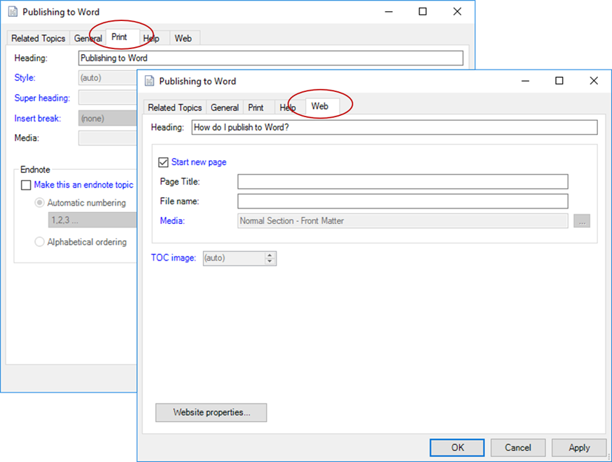

One of the Author-it's advantages is the ability to quickly and easily publish to different outputs, such as Word and HTML, from the same source. Typically, you do this by selecting a different publishing profile without making any changes to the content. However, not all outputs serve the same purpose or even audience.
One way to meet different audience needs is to use a different topic title for each of the outputs. For example, readers who open a PDF guide are looking for more traditionally-structured content while readers who open an HTML-based help system may be looking for content in a different way, such as a knowledge article.
Here are some examples of how you can use different headings:
|
Output Format |
Use Case |
Published Heading |
|---|---|---|
|
|
Use this heading for traditional Word and PDF outputs. The heading displays for each topic in the output and is typically written as an action that describes the function. |
Publishing to Word |
|
Help |
Use this heading for traditional online help output. Like Print, Help headings are typically written as an action. This option creates legacy compiled HTML help, not the modern HTML5-based help. |
Publishing to Word |
|
Web |
Use this for HTML5-based help and knowledge articles. The heading is used for the title in the help or knowledge article and is often written as a question based on what the reader might be looking to do. |
How do I publish to Word? |
You can accommodate these different needs in a single topic using the topic properties. When you open the properties, you can change the heading for each of the output types that Author-it supports. In the following graphic, you can see different headings for the Print and Web outputs:

Note: Consider including an Author Review Note at the beginning of the topic that lists the different headings for the topic. This makes it easier for other authors or editors to know that different headings are being used.
Complete the following to change headings for different outputs:
Open the properties for the topic.
Select the Print, Help, or Web tab and enter the heading in the Heading field.
Note: The Help tab is for legacy compiled HTML Help output.